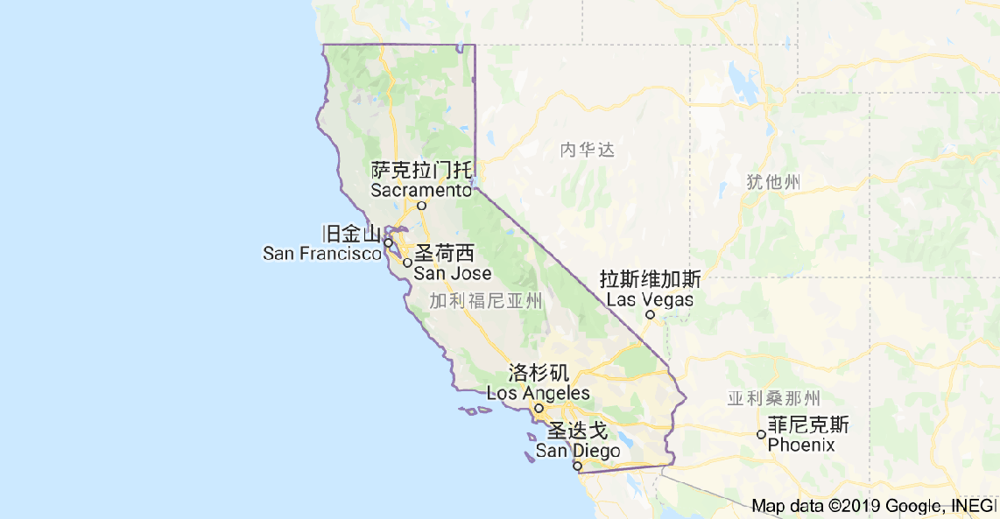
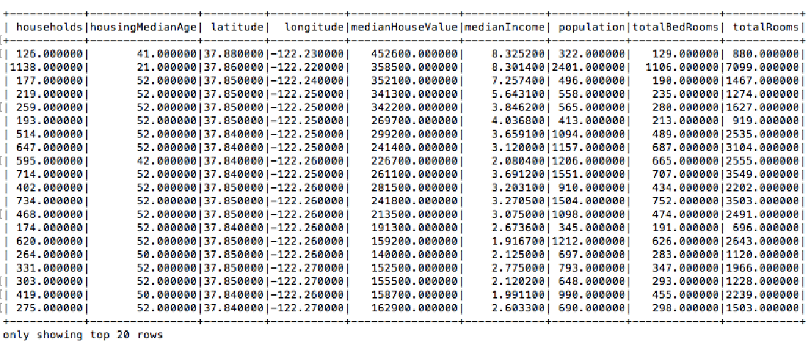

- 00 开篇词 从这里开始，带你走上硅谷一线系统架构师之路.md.html
- 01 为什么MapReduce会被硅谷一线公司淘汰？.md.html
- 02 MapReduce后谁主沉浮：怎样设计下一代数据处理技术？.md.html
- 03 大规模数据处理初体验：怎样实现大型电商热销榜？.md.html
- 04 分布式系统（上）：学会用服务等级协议SLA来评估你的系统.md.html
- 05 分布式系统（下）：架构师不得不知的三大指标.md.html
- 06 如何区分批处理还是流处理？.md.html
- 07 Workflow设计模式：让你在大规模数据世界中君临天下.md.html
- 08 发布_订阅模式：流处理架构中的瑞士军刀.md.html
- 09 CAP定理：三选二，架构师必须学会的取舍.md.html
- 10 Lambda架构：Twitter亿级实时数据分析架构背后的倚天剑.md.html
- 11 Kappa架构：利用Kafka锻造的屠龙刀.md.html
- 12 我们为什么需要Spark？.md.html
- 13 弹性分布式数据集：Spark大厦的地基（上）.md.html
- 14 弹性分布式数据集：Spark大厦的地基（下）.md.html
- 15 Spark SQL：Spark数据查询的利器.md.html
- 16 Spark Streaming：Spark的实时流计算API.md.html
- 17 Structured Streaming：如何用DataFrame API进行实时数据分析_.md.html
- 18 Word Count：从零开始运行你的第一个Spark应用.md.html
- 19 综合案例实战：处理加州房屋信息，构建线性回归模型.md.html
- 20 流处理案例实战：分析纽约市出租车载客信息.md.html
- 21 深入对比Spark与Flink：帮你系统设计两开花.md.html
- 22 Apache Beam的前世今生.md.html
- 23 站在Google的肩膀上学习Beam编程模型.md.html
- 24 PCollection：为什么Beam要如此抽象封装数据？.md.html
- 25 Transform：Beam数据转换操作的抽象方法.md.html
- 26 Pipeline：Beam如何抽象多步骤的数据流水线？.md.html
- 27 Pipeline I_O_ Beam数据中转的设计模式.md.html
- 28 如何设计创建好一个Beam Pipeline？.md.html
- 29 如何测试Beam Pipeline？.md.html
- 30 Apache Beam实战冲刺：Beam如何run everywhere_.md.html
- 31 WordCount Beam Pipeline实战.md.html
- 32 Beam Window：打通流处理的任督二脉.md.html
- 33 横看成岭侧成峰：再战Streaming WordCount.md.html
- 34 Amazon热销榜Beam Pipeline实战.md.html
- 35 Facebook游戏实时流处理Beam Pipeline实战（上）.md.html
- 36 Facebook游戏实时流处理Beam Pipeline实战（下）.md.html
- 37 5G时代，如何处理超大规模物联网数据.md.html
- 38 大规模数据处理在深度学习中如何应用？.md.html
- 39 从SQL到Streaming SQL：突破静态数据查询的次元.md.html
- 40 大规模数据处理未来之路.md.html
- FAQ第一期 学习大规模数据处理需要什么基础？.md.html
- FAQ第三期 Apache Beam基础答疑.md.html
- FAQ第二期 Spark案例实战答疑.md.html
- 加油站 Practice makes perfect！.md.html
- 结束语 世间所有的相遇，都是久别重逢.md.html
- 捐赠
19 综合案例实战：处理加州房屋信息，构建线性回归模型
你好，我是蔡元楠。
今天我要与你分享的主题是“综合案例实战：处理加州房屋信息，构建线性回归模型”。
通过之前的学习，我们对Spark各种API的基本用法有了一定的了解，还通过统计词频的实例掌握了如何从零开始写一个Spark程序。那么现在，让我们从一个真实的数据集出发，看看如何用Spark解决实际问题。
数据集介绍
为了完成今天的综合案例实战，我使用的是美国加州1990年房屋普查的数据集。

数据集中的每一个数据都代表着一块区域内房屋和人口的基本信息，总共包括9项：
- 该地区中心的纬度（latitude）
- 该地区中心的经度（longitude）
- 区域内所有房屋屋龄的中位数（housingMedianAge）
- 区域内总房间数（totalRooms）
- 区域内总卧室数（totalBedrooms）
- 区域内总人口数（population）
- 区域内总家庭数（households）
- 区域内人均收入中位数（medianIncome）
- 该区域房价的中位数（medianHouseValue）
也就是说，我们可以把每一个数据看作一个地区，它含有9项我们关心的信息，也就是上面提到的9个指标。比如下面这个数据：
-122.230000,37.880000,41.000000,880.000000,129.000000,322.000000,126.000000,8.325200,452600.000000'
这个数据代表该地区的经纬度是（-122.230000,37.880000），这个地区房屋历史的中位数是41年，所有房屋总共有880个房间，其中有129个卧室。这个地区内共有126个家庭和322位居民，人均收入中位数是8.3252万，房价中位数是45.26万。
这里的地域单位是美国做人口普查的最小地域单位，平均一个地域单位中有1400多人。在这个数据集中共有两万多个这样的数据。显然，这样小的数据量我们并“不需要”用Spark来处理，但是，它可以起到一个很好的示例作用。这个数据集可以从网上下载到。这个数据集是在1997年的一篇学术论文中创建的，感兴趣的同学可以去亲自下载，并加以实践。
那么我们今天的目标是什么呢？就是用已有的数据，构建一个线性回归模型，来预测房价。
我们可以看到，前8个属性都可能对房价有影响。这里，我们假设这种影响是线性的，我们就可以找到一个类似A=b_B+c_C+d_D+…+i_I的公式，A代表房价，B到I分别代表另外八个属性。这样，对于不在数据集中的房子，我们可以套用这个公式来计算出一个近似的房价。由于专栏的定位是大规模数据处理专栏，所以我们不会细讲统计学的知识。如果你对统计学知识感兴趣，或者还不理解什么是线性回归的话，可以去自行学习一下。
进一步了解数据集
每当我们需要对某个数据集进行处理时，不要急着写代码。你一定要先观察数据集，了解它的特性，并尝试对它做一些简单的预处理，让数据的可读性更好。这些工作我们最好在Spark的交互式Shell上完成，而不是创建python的源文件并执行。因为，在Shell上我们可以非常直观而简便地看到每一步的输出。
首先，让我们把数据集读入Spark。
from pyspark.sql import SparkSession
# 初始化SparkSession和SparkContext
spark = SparkSession.builder
.master("local")
.appName("California Housing ")
.config("spark.executor.memory", "1gb")
.getOrCreate()
sc = spark.sparkContext
# 读取数据并创建RDD
rdd = sc.textFile('/Users/yourName/Downloads/CaliforniaHousing/cal_housing.data')
# 读取数据每个属性的定义并创建RDD
header = sc.textFile('/Users/yourName/Downloads/CaliforniaHousing/cal_housing.domain')
这样，我们就把房屋信息数据和每个属性的定义读入了Spark，并创建了两个相应的RDD。你还记得吧？RDD是有一个惰性求值的特性的，所以，我们可以用collect()函数来把数据输出在Shell上。
header.collect()
[u'longitude: continuous.', u'latitude: continuous.', u'housingMedianAge: continuous. ', u'totalRooms: continuous. ', u'totalBedrooms: continuous. ', u'population: continuous. ', u'households: continuous. ', u'medianIncome: continuous. ', u'medianHouseValue: continuous. ']
这样，我们就得到了每个数据所包含的信息，这和我们前面提到的9个属性的顺序是一致的，而且它们都是连续的值，而不是离散的。你需要注意的是，collect()函数会把所有数据都加载到内存中，如果数据很大的话，有可能会造成内存泄漏，所以要小心使用。平时比较常见的方法是用take()函数去只读取RDD中的某几个元素。
由于RDD中的数据可能会比较大，所以接下来让我们读取它的前两个数据。
rdd.take(2)
[u'-122.230000,37.880000,41.000000,880.000000,129.000000,322.000000,126.000000,8.325200,452600.000000', u'-122.220000,37.860000,21.000000,7099.000000,1106.000000,2401.000000,1138.000000,8.301400,358500.000000']
由于我们是用SparkContext的textFile函数去创建RDD，所以每个数据其实是一个大的字符串，各个属性之间用逗号分隔开来。这不利于我们之后的处理，因为我们可能会需要分别读取每个对象的各个属性。所以，让我们用map函数把大字符串分隔成数组，这会方便我们的后续操作。
rdd = rdd.map(lambda line: line.split(","))
rdd.take(2)
[[u'-122.230000', u'37.880000', u'41.000000', u'880.000000', u'129.000000', u'322.000000', u'126.000000', u'8.325200', u'452600.000000'], [u'-122.220000', u'37.860000', u'21.000000', u'7099.000000', u'1106.000000', u'2401.000000', u'1138.000000', u'8.301400', u'358500.000000']]
我们在前面学过，Spark SQL的DataFrame API在查询结构化数据时更方便使用，而且性能更好。在这个例子中你可以看到，数据的schema是定义好的，我们需要去查询各个列，所以DataFrame API显然更加适用。所以，我们需要先把RDD转换为DataFrame。
具体来说，就是需要把之前用数组代表的对象，转换成为Row对象，再用toDF()函数转换成DataFrame。
from pyspark.sql import Row
df = rdd.map(lambda line: Row(longitude=line[0],
latitude=line[1],
housingMedianAge=line[2],
totalRooms=line[3],
totalBedRooms=line[4],
population=line[5],
households=line[6],
medianIncome=line[7],
medianHouseValue=line[8])).toDF()
现在我们可以用show()函数打印出这个DataFrame所含的数据表。
df.show()

这里每一列的数据格式都是string，但是，它们其实都是数字，所以我们可以通过cast()函数把每一列的类型转换成float。
def convertColumn(df, names, newType)
for name in names:
df = df.withColumn(name, df[name].cast(newType))
return df
columns = ['households', 'housingMedianAge', 'latitude', 'longitude', 'medianHouseValue', 'medianIncome', 'population', 'totalBedRooms', 'totalRooms']
df = convertColumn(df, columns, FloatType())
转换成数字有很多优势。比如，我们可以按某一列，对所有对象进行排序，也可以计算平均值等。比如，下面这段代码就可以统计出所有建造年限各有多少个房子。
df.groupBy("housingMedianAge").count().sort("housingMedianAge",ascending=False).show()
预处理
通过上面的数据分析，你可能会发现这些数据还是不够直观。具体的问题有：
- 房价的值普遍都很大，我们可以把它调整成相对较小的数字；
- 有的属性没什么意义，比如所有房子的总房间数和总卧室数，我们更加关心的是平均房间数；
- 在我们想要构建的线性模型中，房价是结果，其他属性是输入参数。所以我们需要把它们分离处理；
- 有的属性最小值和最大值范围很大，我们可以把它们标准化处理。
对于第一点，我们观察到大多数房价都是十万起的，所以可以用withColumn()函数把所有房价都除以100000。
df = df.withColumn("medianHouseValue", col("medianHouseValue")/100000)
对于第二点，我们可以添加如下三个新的列：
- 每个家庭的平均房间数：roomsPerHousehold
- 每个家庭的平均人数：populationPerHousehold
- 卧室在总房间的占比：bedroomsPerRoom
当然，你们可以自由添加你们觉得有意义的列，这里的三个是我觉得比较典型的。同样，用withColumn()函数可以容易地新建列。
df = df.withColumn("roomsPerHousehold", col("totalRooms")/col("households"))
.withColumn("populationPerHousehold", col("population")/col("households"))
.withColumn("bedroomsPerRoom", col("totalBedRooms")/col("totalRooms"))
同样，有的列是我们并不关心的，比如经纬度，这个数值很难有线性的意义。所以我们可以只留下重要的信息列。
df = df.select("medianHouseValue",
"totalBedRooms",
"population",
"households",
"medianIncome",
"roomsPerHousehold",
"populationPerHousehold",
"bedroomsPerRoom")
对于第三点，最简单的办法就是把DataFrame转换成RDD，然后用map()函数把每个对象分成两部分：房价和一个包含其余属性的列表，然后在转换回DataFrame。
from pyspark.ml.linalg import DenseVector
input_data = df.rdd.map(lambda x: (x[0], DenseVector(x[1:])))
df = spark.createDataFrame(input_data, ["label", "features"])
我们重新把两部分重新标记为“label”和“features”，label代表的是房价，features代表包括其余参数的列表。
对于第四点，数据的标准化我们可以借助Spark的机器学习库Spark ML来完成。Spark ML也是基于DataFrame，它提供了大量机器学习的算法实现、数据流水线（pipeline）相关工具和很多常用功能。由于本专栏的重点是大数据处理，所以我们并没有介绍Spark ML，但是我强烈推荐同学们有空去了解一下它。
在这个AI和机器学习的时代，我们不能落伍。
from pyspark.ml.feature import StandardScaler
standardScaler = StandardScaler(inputCol="features", outputCol="features_scaled")
scaler = standardScaler.fit(df)
scaled_df = scaler.transform(df)
在第二行，我们创建了一个StandardScaler，它的输入是features列，输出被我们命名为features_scaled。第三、第四行，我们把这个scaler对已有的DataFrame进行处理，让我们看下代码块里显示的输出结果。
scaled_df.take(1)
[Row(label=4.526, features=DenseVector([129.0, 322.0, 126.0, 8.3252, 6.9841, 2.5556, 0.1466]), features_scaled=DenseVector([0.3062, 0.2843, 0.3296, 4.3821, 2.8228, 0.2461, 2.5264]))]
我们可以清楚地看到，这一行新增了一个features_scaled的列，它里面每个数据都是标准化过的，我们应该用它，而非features来训练模型。
创建模型
上面的预处理都做完后，我们终于可以开始构建线性回归模型了。
首先，我们需要把数据集分为训练集和测试集，训练集用来训练模型，测试集用来评估模型的正确性。DataFrame的randomSplit()函数可以很容易的随机分割数据，这里我们将80%的数据用于训练，剩下20%作为测试集。
train_data, test_data = scaled_df.randomSplit([.8,.2],seed=123)
用Spark ML提供的LinearRegression功能，我们可以很容易得构建一个线性回归模型，如下所示。
from pyspark.ml.regression import LinearRegression
lr = LinearRegression(featuresCol='features_scaled', labelCol="label", maxIter=10, regParam=0.3, elasticNetParam=0.8)
linearModel = lr.fit(train_data)
LinearRegression可以调节的参数还有很多，你可以去官方API文档查阅，这里我们只是示范一下。
模型评估
现在有了模型，我们终于可以用linearModel的transform()函数来预测测试集中的房价，并与真实情况进行对比。代码如下所示。
predicted = linearModel.transform(test_data)
predictions = predicted.select("prediction").rdd.map(lambda x: x[0])
labels = predicted.select("label").rdd.map(lambda x: x[0])
predictionAndLabel = predictions.zip(labels).collect()
我们用RDD的zip()函数把预测值和真实值放在一起，这样可以方便地进行比较。比如让我们看一下前两个对比结果。
predictionAndLabel.take(2)
[(1.4491508524918457, 1.14999), (1.5831547768979277, 0.964)]
这里可以看出，我们的模型预测的结果有些偏小，这可能有多个因素造成。最直接的原因就是房价与我们挑选的列并没有强线性关系，而且我们使用的参数也可能不够准确。
这一讲我只是想带着你一起体验下处理真实数据集和解决实际问题的感觉，想要告诉你的是这种通用的思想，并帮助你继续熟悉Spark各种库的用法，并不是说房价一定就是由这些参数线性决定了。感兴趣的同学可以去继续优化，或者尝试别的模型。
小结
这一讲我们通过一个真实的数据集，通过以下步骤解决了一个实际的数据处理问题：
- 观察并了解数据集
- 数据清洗
- 数据的预处理
- 训练模型
- 评估模型
其实这里还可以有与“优化与改进”相关的内容，这里没有去阐述是因为我们的首要目的依然是熟悉与使用Spark各类API。相信通过今天的学习，你初步了解了数据处理问题的一般思路，并强化了对RDD、DataFrame和机器学习API的使用。
实践与思考题
今天请你下载这个数据集，按文章的介绍去动手实践一次。如果有时间的话，还可以对这个过程的优化和改进提出问题并加以解决。
欢迎你在留言板贴出自己的idea。如果你觉得有所收获，也欢迎你把文章分享给朋友。
© 2019 - 2023 Liangliang Lee. Powered by gin and hexo-theme-book.